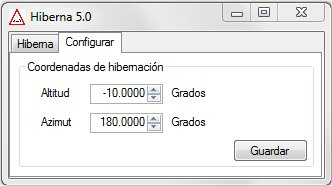
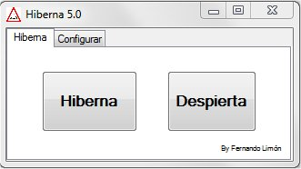

|
Hiberna |
||
|
|
Versión 5.3 |
|
Hay monturas que carecen de funcionalidades de gran utilidad en instalaciones permanentes, como puede el poder establecer un punto de aparcamiento e incluso hibernarla, lo que permite despertar la montura y seguir trabajando sin necesidad de realizar una nueva alineación. Este tipo de monturas, cuando se utilizan en observatorios fijos, sólo requieren una buena puesta en estación y sincronizarla al comienzo de sesión con unas coordenadas conocidas, utilizando para ello una estrella de referencia.
Esto está muy bien si estamos presentes en el momento de arrancar la montura, pero ¿y si trabajamos en remoto? La cosa se complica.
Para desarrollar este proyecto me ha basado en la rutina que utilizo en mi observatorio con la montura Celestron CGEM:
a) Finalizar sesión:
1.- Desde POTH doy la orden de aparcar la montura. Lo que se traduce en un desplazamiento a unas coordenadas Alt/Az que previamente habremos definido, y que siempre utilizaremos para aparcar.
2.- Una vez alcanzadas las coordenadas de aparcamiento, se detienen los motores de la montura (tracking off).
3.- Desde NexRemore, con los motores parados, hiberno la montura.
b) Inicio de sesión:
1.- Desde NexRemote doy la orden de despertar (wake up) a la montura. Ésta recuerda las coordenadas Alt/Az a donde apuntaba cuando se le dio la orden de hibernar. Por lo que sólo tiene que sincronizar con esas coordenadas y poner los motores en marcha.
Bueno, pues básicamente he desarrollado un programa que permite repetir este proceso. Para comunicarnos con el telescopio nos basaremos en POTH, un HUB incluido en la plataforma ASCOM.

En la pestaña Configurar podemos establecer las coordenadas Alt/Az donde queremos que se posicione nuestro telescopio cuando demos la orden de Hibernar y las coordenadas donde estará apuntando el telescopio en el momento de despertar.
En la pestaña principal tenemos dos opciones:

Hiberna: Realiza un desplazamiento a las coordenadas que se han prefijado, y una vez establecido, se detienen los motores de la montura. En ese momento se puede apagar.
Despierta: Antes de encender la montura, manualmente la pondremos con la mayor precisión posible apuntando a las coordenadas establecidas en la configuración. En ese instante encenderemos la montura, conectaremos a ella desde POTH y pulsaremos este botón. La montura quedará sincronizada en estas coordenadas. Como el despertar es menos preciso, es recomendable realizar en desplazamiento a alguna cercana del cielo y resolver una foto con Elbrus o PinPoint.
La fase de Despertar es la más dependiente de lo que cada montura necesite que se haga para iniciarla, por lo que pocas cosas puedo añadir a lo comentado.
El programa lo podéis descargar de aquí.
Este programa ha sido compilado para funcionar con Microsoft .NET Framework 4.5, por lo que deberá verificar que dispone de esta versión o superior, y en su defecto, podrá descargarlo e instalarlo desde Microsoft.
Espero que este programita os guste y sea de utilidad.